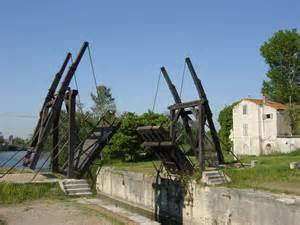

|
|
|
第四章 コンドヴィーラームールス
ペルレラペイレは、川と海に囲まれた要塞の地だった。町の中央には城があり、堀に囲まれた城は、港のほど近くにそびえ立っていた。
グラーハルツから旅だったパルシファルは、荒涼とした山を越えて、その日のうちに、ブローバルツの国に入り、ペルラペイレの町にやってきた。
町は荒れはてていて、人影は見えなかった。無人の町を通って城に向かって行くと、堀に出た。堀には古い跳ね橋がかかっていた。橋はあちこちが朽ち、風が吹くとギーギーと音を立てて揺れ、今にも崩れ落ちそうだった。
橋の向こう側には、甲冑を着けた騎士が五十人ほど立ちならび、剣を振りかざして、
「帰れっ、帰れっ、」と叫んでいた。彼らはパルシファルを敵だと思ったのだ。しかし、戦いを仕かけてくる様子はなく、まるで熊や鹿を追いはらうように、激しく叫んでいるだけだった。
パルシファルの馬は、彼らの罵声を聞いてか、橋の手前で止まり、橋を渡ろうとしなかった。馬が動いてくれないので、パルシファルは、馬を下りて、橋を渡っていった。彼は大敵に対しても、恐れることがなかった。
それを見た五十人の騎士たちは、城内へ逃げこみ、城門を閉ざしてかんぬきをかけた。彼らはパルシファルの後に大群が続いてくると思ったのだ。
パルシファルは橋を渡り、美しくそびえ立つ建物の門の前に立った。そして、ノック用の鉄の輪を見つけて、強くたたいた。返事をしたのは美しい乙女だった。
「あなたは私たちを攻撃されようとしているのですか。それならば、もう私たちは戦いを望んではいませんので、どうかお引きとりください。」
「そうではありません。私はあなた方にお仕えしたいと思っているのです。」
パルシファルの意向を聞いた乙女は賢明だった。乙女は、もしかしたらこの方がこの国を救ってくださるかもしれないと思い、女王に報告し、彼を城内に入れた。パルシファルは美しい乙女に招き入れられて、面と向き合い、お礼を言った。二人は互いの頬に挨拶のキスを交わした。
この時、パルシファルはリアーセを思いだした。あの美しいリアーセに再び会える日が来るのだろうかと思い、胸が痛んだ。
女王の家来がパルシファルを案内した。城内にはたくさんの兵士がいたが、彼らの顔は青白かったり、どす黒かったりして、元気がなかった。パルシファルを出迎えにやってきた騎士たちも、痩せた顔で笑顔をつくり、精一杯の振る舞いをしていた。案内をしている家来が言った。
「ご覧になられて、お気づきかと思いますが、我々には食べ物も飲み物もほとんどなく、飢えと戦っているのです。ひどい状態です。お客様を丁重におもてなし致したいのですが、十分なものがお出しできません。どうかお許しください。」
「どうして、そういうことになっているのですか。」
「はい、女王様からもお話があるとは思いますが、ある時、イーゼルテルレの国王クラーミデーが、我らが女王コンドヴィーラームールス様に求婚したのでございます。女王様はおことわりになりました。
それで怒り狂ったクラーミデーは、この町の広い範囲を包囲し、海も川も使えなくして、我々に食糧の調達をさせないようにしたのです。そして、我々を弱らせ、攻撃してきました。すでに半数の兵士が敵に倒されました。今はそんな危機的状況なのです…。女王様にお会いになりますか。」
「喜んで、お会いいたします。」
城の家来は、絨毯をしいた場所でパルシファルの甲冑をぬがせ、豪華なマントを着せた。パルシファルがそこで待っていると、女王コンドヴィーラームールスが現れた。
コンドヴィーラームールスは、広間に通じる広い階段を下りてきて、中ほどで立ち止まり、パルシファルの方を見つめた。白いドレスを着て、宝石がきらめく冠をかぶり、こちらを見るその姿は、まるで白雪と赤い薔薇に扮した美の女神であった。
彼女に比べたら、この世のどんな女性も野草の中に埋もれてしまうであろう。もちろん、パルシファルがこれまでに出会ったどの女性よりも格段に美しかった。その美しさに、パルシファルは心を動かされ、胸に痛みを感じた。
しかし、その時、パルシファルはこう思っていたのだ。
「リアーセがそこにいる。あの美しいリアーセが冠をかぶって目の前にいる。」
パルシファルは、コンドヴィーラームールスの美しい姿を見て、リアーセを思い出したのだ。リアーセを思う気持ちが呼びだされ、自分がリアーセに愛を感じているという事実が、彼の心の中で明るみになった。
しかし、その一方で、自分が愛するリアーセよりも遥かに美しい女性が、目の前にいるという現実が意識に上ってきた。しかも、その女性は女神のような神々しい光をはなって自分を見つめている。パルシファルは、自分の中でリアーセの姿が少しずつ小さくなっていくのがわかった。それとともに、かすかな罪の意識を感じた。
パルシファルはコンドヴィーラームールスが立っている階段まで歩いていき、わずか先にいる女王との間に、好意と敬意をあらわす最適な距離をとった。彼はその距離から女王を見つめ、その美しさを堪能した。
やがて階段を数歩上り、女王と同じ高さに立ち、女王を間近に見つめた。彼女は美しいという言葉を超えていた。コンドヴィーラームールスはパルシファルを気にいり、その唇に挨拶のキスをした。二人は甘い空気に包まれて、広間に移動していった。
二人は広間の豪華な椅子にならんで座った。パルシファルは礼儀正しい振る舞いを身につけていて、しかも、むやみに質問をしてはならないというグルネマンツの教えを覚えていたので、女王の横にいても、一言もしゃべらなかった。
コンドヴィーラームールスは、無口な客にとまどいながらも、主である自分から話をすることが礼儀であると思い、話しはじめた。
「殿。私どもへのご尽力をお申し出になられたことに、お礼を申し上げます。それは私どもが願っていたことですが、今までにそのようなことを言っていただける方はいませんでした。とても嬉しゅうございます。殿はどちらから、お越しになられたのですか。」
パルシファルは答えた。
「グラーハルツの領主グルネマンツのもとから来ました。しばらくお世話になっていたのですが、今日お別れの挨拶をしてまいりました。」
「今日ですか。それは随分お飛ばしになられましたこと。普通は二日三日かかる道のりでございます。あの方は私の母のお兄様ですから、あの方の娘のリアーセは、私のいとこになります。子どものころから、よく一緒に遊びました。
私どもは親族ですから、もし伯父に好意をお持ちなら、伯父に免じて、どうか今夜は少し辛抱してくださいませ。せっかくのお客さまですから、盛大におもてなしをしたいのでございますが、私どもは、今飢えと戦っているところで、食糧がないのでございます。」
パルシファルはリアーセの名を耳にし、胸に痛みを感じた。
「わかりました。今日しっかりと休ませていただければ、それで十分です。」
すると父方の叔父キオートが口をはさみ、大事なお客様なので自分たちが食糧を提供すると言いだした。キオートはすぐにその場を退席し、自分の館に戻り、使いの者に食糧を運ばせた。キオートから届いた食糧のほとんどが、お客であるパルシファルの前に運ばれてきたが、パルシファルは、
「自分は少しでいいから、皆さんで分けてください」と言った。
「ありがとうございます。あなたは私どもの命をお助けくださるのですね。」
コンドヴィーラームールスは感謝した。
配られた食糧はすぐになくなった。平らげられた食糧は、飢えた人々を満足させる量ではなかったので、食べ終わった人々は、なおも物足りない様子だった。パルシファルのところに残ったのは、パン一切れとハム一枚だけだったが、女王と二人で仲良く分けて食べた。
寝室に案内されたパルシファルは、豪華なベッドに横になり、今にも、眠りに落ちようとしていた。その時、扉が静かにひらいて、コンドヴィーラームールスが部屋に入ってきた。パルシファルは女王の姿に気づき、驚いて目が覚めた。
枕元にはたくさんの蝋燭がついていたので、部屋の中は明るく、先まで見通すことができた。女王は美しかった。身に着けた白い絹の肌着は、妖精のような神秘的な輝きをはなち、女王が清き乙女であることを示していた。肌着の上にはガウンをはおり、妖精の繊細さを大切に包みこんでいるかのようだった。女王は足音を忍ばせてベッドに近づき、ベッドの脇にひざまずいた。
「殿、お話を聞いていただきとうございます。」
「もちろん、女王様のお話であるなら、どんなお話であろうと、喜んで聞かせていただきます。」
パルシファルがそう言うと、女王は体を震わせて涙を流しはじめた。
「殿の前で見苦しい姿をお見せすることをお許しください…」
「女王様が私の前でひざまずくのは、似つかわしくありません。さぁ、私のそばへおすわりください。それとも、ここに横になられますか。」
「騎士の名誉にかけて、貞節を守ってくださるとお約束していただけるなら、殿のそばに横になりとうございます。」
パルシファルが承諾すると、女王はベッドに身をすべらせた。女王は涙をぬぐいながら話しはじめた。
「殿がお休みになられるのを邪魔してしまい、申し訳ありません。どうしても今夜、お話を聞いていただきたいのです。
イーゼルテルレの国王クラーミデーが、私の愛が欲しいばかりに、宮内卿キングルーンとともに、私の国土といくつかの城を侵略しました。私の清い身をさしだして、クラーミデーの妻になるくらいなら、自ら命を絶とうと思います。
彼らは、伯父グルネマンツの息子たちを打ち殺しました。私の父タンペンテイレ王も同じ戦いが原因で亡くなりました。わが国の騎士や兵士や家来たちも半数以上が亡くなりました。今でも毎日、餓死する者が出ています。この城は破滅寸前なのです。殿のような素敵な騎士にお会いできましたのに、楽しくしてはいられないのです。」
パルシファルは、グルネマンツの名前を聞き、力になりたいという思いが増した。
「私ごときの者が、お力になることができましょうか。」
「はい、宮内卿キングルーンを打ち倒して、私を救っていただけましたら嬉しゅうございます。キングルーンはこれまでにも一騎討ちでたくさんの騎士を倒しました。明日もまた戦いに来ると思います。私は降伏するつもりはございません。
降伏してクラーミデーのような者に、私の乙女の操を奪われるくらいなら、塔の上から身を投げます。どうか私を助けてください。」
「キングルーンが、ベルターネの人であろうとどこの国の人であろうと、私の手で女王様、あなたをお守りいたします。」
翌朝、パルシファルは身支度をすませて、早々に甲冑を身にまとった。駿馬に乗り、城門の前で敵があらわれるのを待っていた。すると間もなくして、キングルーンの軍勢が大群をなしてやってきた。
キングルーンは大群の先頭を切って走ってきた。パルシファルは戦いやすい野原に向かって馬を進めた。キングルーンはパルシファルの姿をめがけて走りだした。二人は互いに接近すると、馬を旋回させてにらみ合い、一騎討ちの意志を取りかわした。
この時、キングルーンは、この戦いは退屈な朝の暇つぶしのようなものになるだろうと思っていた。今日もまた、彼の強さの前に一人の騎士がひれ伏すであろうことを楽しみにしていた。彼は未だ、対等な試合のできる相手に出会ったことがなく、一度に６人の相手と戦うことができる豪傑として知られていたのである。
一騎討ちは両側から観戦できた。城壁側にはパルシファルに希望を託した人々の心配そうな顔がならび、敵陣の側には、勝利を期待する軍勢の高揚した顔がみえた。
二人の騎士は遠く離れた地点から馬に拍車をかけ、最初はゆっくりと、そして徐々に速く、距離を縮めていった。二人の騎士は長い槍を構えて、矛先を相手の楯に向けた。疾駆する馬は最高速度に達し、ちょうど真中でぶつかり合った。
その力で二人の槍は折れ、馬は尻から倒れた。二人の騎士は野原に投げ出され、重い甲冑の許す限り、できるだけ素早く立ちあがり、剣を抜いた。二人は互いに激しく打ちあい、二つの楯は、割れて使いものにならなくなったが、それでも戦い続けた。
キングルーンは、この時までは、己の強さと剣の腕前に自信をもっていたが、徐々に疲れを感じ、剣が重くなってくるとともに、自信が揺らぎはじめた。その時、パルシファルの剣がものすごい力でキングルーンの兜を打った。
さらに、二度目の一撃で、相手を地面にはわせた。次の瞬間には、キングルーンの胸に膝をのせて、押さえこんでいた。剣は喉に押しつけられた。
「助けてください… 忠誠を誓わせてください。」と仰向けになった男はうめいた。
パルシファルは、自分の栄誉を得ることよりも、これまでにお世話になった人たちに報いたいと考えた。
「私に対してではなく、グラーハルツの領主グルネマンツに忠誠の誓いをたてよ。」
「それは、できない。それならいっそのこと俺を殺してくれ。あの人の息子は俺が殺したのだから、彼に仕えることはできない。」
「それなら、お前が苦しめたペルラペイレの女王コンドヴィーラームールスに忠誠の誓いをたてよ。」
「それもできません。城内に連れていかれたら、私の体は切りきざまれ、拷問の末に捨てられます。ペルラペイレの騎士を大勢打ち殺しましたから。」
「別の選択肢をあげよう。ここからベルターネの国に行き、アーサー王のもとにいる一人の女性に忠誠の誓いをたてよ。彼女は、私に微笑んだために頬をたたかれたのだ。その女性を探して仕えるのだ。それから、アーサー王とギノヴェーア王妃、ご臣下一同には私からの敬意を伝えてくれ。しかし、頬をたたかれた女性と私が受けた汚名を晴らすまでは、そちらには参上しない、とも伝えてくれ。それから、海と川の包囲網をといてくれ。」
「かしこまりました。」
キングルーンはこの条件をのんで、パルシファルに別れを告げた。
パルシファルはコンドヴィーラームールスと城の人々が待っている場所へ戻った。城の人々は歓喜の輪になってパルシファルを迎えた。
「彼を主君にっ！」
「我々の主君になってくださいっ」というかけ声とともに、パルシファルの名を叫ぶ拍手の連呼が起きた。人々は跳びはねて喜び、熱狂の輪が、彼を女王コンドヴィーラームールスのもとへ導いた。
女王は感動した。至福の喜びとともに、これまでに抑えられてきた恐怖と苦痛が激情となって押しよせた。命を救っていただいた感謝と安堵、そして勝利の喜びが入りまじり、その感情は恍惚の域に達した。女王はパルシファルにかけより、激しく抱きしめた。
「私は、この方パルシファル殿以外のどなたの妻にもなりません。」
取りかこんでいた人々は、熱狂の雄叫びをあげ、再び拍手の連呼が起きた。女王はパルシファルの甲冑を脱がせ、心の底からの感謝をこめて精一杯の世話をした。そうしながら、
「どうか私の夫になってくださいませ。私の最愛の人になっていただきたいのです。」と何度も懇願した。
その時、海の包囲網がとかれ、沖に停泊していた二隻の船が港に横づけされた。船の中には、食糧が大量に積まれており、さっそく人々は積み荷をおろした。人々は皆、笑顔で働き、すぐに食事の準備がはじまった。
心の清らかなパルシファルは、飢えた人々が急に食べ過ぎて体調をくずすことのないように、少量の食事をだすように手配した。夕飯には量を増やして健康な体に回復するように気をくばった。
その夜、二人は寝室でベッドを共にした。しかし、二人は男女の愛の営みについて、まったく心得がなかった。恥じらいと思いやりから、ベッドにならんで横になりながらも、決して相手の肌に触れることはなく、相手の美しさと気に入ったところをほめ合い、おしゃべりを続けただけだった。
彼の中には当然、体内から突きあげる欲情があったが、決して行動には移さなかった。彼女が過度に刺激するような振る舞いをしなかったからでもあるが、彼は、これ以上のことを望んだら、それは不実のなせる仕業だと思った。それは否定されるものではないかもしれないが、それよりも大切なものがあると思った。それは相手の心にふれることであり、相手を理解することだと。
こうして二人は一晩中語り合い、知らぬ間に眠りに落ちていた。
二日目の夜も、二人は同じように清らかな時を過ごした。二人の間には、とてもあたたかい空気がながれ、お互いを理解しあい、お互いの好意と愛を大きくふくらませていた。二人は至福の愛と信頼の繭に包まれているようだった。
三日目の夜、大きく育った愛と信頼が、二人を自然に導き、二人は腕と足をからませ、甘美の時を過ごした。
翌日、コンドヴィーラームールスは人妻の印であるずきんをかぶった。幸せに満たされていた。そして、パルシファルに国と国土を与えた。パルシファルはコンドヴィーラームールスと結婚し、ペルラペイレの城主、ブローバルツの国王となった。
そのころ、敵陣のクラーミデーは、強力な軍勢をひきいて、ペルラペイレの城を攻めようとしていた。そこへ、小姓が馬で駆けつけてクラーミデーに伝言した。
「ペルラペイレの城外で、見事な一騎討ちが行われました。そこで、わが宮内卿キングルーンが破れました。ベルターネのアーサー王のもとで、忠誠の誓いを立てるようです。相手は身分の高い騎士で赤い甲冑を着けています。おそらくベルターネの円卓の騎士イテールではないかと思われます。女王が援助を要請したのでしょう。
わが軍勢はペルラペイレで、手痛い反撃をうけるでしょう。戦いは避けた方がいいかもしれません。」
そう言われても、クラーミデーの意志は変わらなかった。
「そんなことはない。我々には勝利が待っているだけだ。女王はこの私を望んでいるとキングルーンが言っていた。今こそペルラペイレを総攻撃するぞ。」
クラーミデーとその軍勢が、ペルラペイレの城外へ到着すると、一斉に攻撃が開始された。城の兵士や市民も応戦し、激しい戦いになった。パルシファルははるか先頭に立って戦った。彼と戦う者は皆ひどい目にあった。
パルシファルは、クラーミデーの軍旗めざして近づいていった。勇猛果敢に戦い、クラーミデーの軍勢に大きな損害を与えた。クラーミデー自身も苦境におちいり、攻撃中止の命令を出さざるを得なくなった。パルシファルは、敵軍の騎士を二十人、生け捕りにして連れかえった。
パルシファルは三日間、捕虜を大切にあつかい、十分な食事とワインを与え、自由にくつろがせた。三日目には二十人の捕虜に忠誠を誓わせ、甲冑の着用をゆるし、敵陣に戻るように言った。
捕虜だった二十人の騎士は、敵陣に戻ってから、ペルラペイレの城内での待遇について話した。
「城内には食糧が山ほどあり、我々は満腹に食べさせてもらったし、ワインもたくさん飲ませてもらい、へべれけに酔っぱらっていい気分にさせてもらった。まるで、捕虜ではなく、あちらの兵士のようなあつかいだった。」
これを聞いたクラーミデーは、城を陥落させることは難しいと感じ、やる気を失ったが、コンドヴィーラームールスへの執拗な想いと恋がたきへの憎しみから、性急な方法を選んだ。彼は、ペルラペイレの城内に使者を送って、一騎討ちによる果たし合いの申し込みをしたのだ。
「女王と床をともにした者ならば、この国を賭けて戦えるほどの勇士であり、女王から認められた者であろう。さらば、我との一騎討ちで、この国の所有権を取り決めようではないか。」
パルシファルはこれを聞いて、喜んで答えた。
「承知した。たとえ私が苦戦しようとも、城内軍からは一人として助太刀には来ないことを保証しよう。」
この一騎討ちは、天上の美しさを誇るコンドヴィーラームールスの伴侶にふさわしい者を決める戦いとなる。パルシファルは戦場へ堂々と馬を進めた。パルシファルは赤いマントに赤い楯を持ち、馬は赤いビロードの覆いをかけていた。すべてが赤に包まれた人馬が、大地の上を躍動していた。彼は城の前の野原にくると、すぐに疾駆し、戦闘の準備を整えて、さらに襲歩にうつした。
クラーミデーも戦闘を開始した。助走は長く、二つの人馬は激しくぶつかった。互いの槍が何度も激しくぶつかり合い、二頭の馬が同時に騎士を乗せたまま倒れた。二人はすかさず剣をもち、激しく打ちあい、火花を散らした。
剣の一撃をおろすたびに、楯が粉々に砕け、徐々に小さくなっていった。パルシファルは疲れを覚えなかったが、クラーミデーは疲れてきて、敗戦が濃厚となった。パルシファルの最後の一撃によって、クラーミデーは地面に倒され、兜がはぎ取られた。鼻から血が吹きでていた。パルシファルは相手を押さえつけて、言った。
「これで私の妻は、お前から苦しめられずにすむ。さあ、死とはどんなものか、教えてやろう。」
「どうして私を殺そうとするのか。あなたはこの一騎討ちに勝利して、誇り高き名誉を得た。そして、ペルラペイレの国と女王コンドヴィーラームールスを手に入れた。それにひきかえ、私の名誉は地に落ち、私には恥辱だけが残された。この恥は孫の代まで伝えられることになる。私はもはや生ける屍だ。それでもなぜ私を殺そうとするのか。」とクラーミデーは訴えた。
パルシファルは、憐みの心を持つように、というグルネマンツの言葉を思い出し、この教えにしたがった。
「グラーハルツの領主グルネマンツに忠誠の誓いをたてていただこう。」
「それはできません。私はあの方の息子たちを打ち殺したからです。私はあの方に苦しみを与えている。あの方の息子たちはコンドヴィーラームールスのためにわが軍と戦い命を失ったのです。私も多くの兵士を失い、双方ともに千人以上の兵士を失った壮絶な戦いでした。それで十分でしょう。」
「それができなければ、ベルターネの国のアーサー王のところに行ってもらおう。アーサー王には私の敬意を伝え、私が受けた汚名を晴らしてくださるように伝えてくれ。それから、私に微笑んだために頬をたたかれた女性がいる。その女性に忠誠の誓いを立てるのだ。そして、私が心配していると伝えてくれ。」
クラーミデーは、答えた。
「あなたのご命令に添えるようにいたします。そうと決まれば、早速ここを出立します。」
パルシファルはクラーミデーを、ベルターネの国に向かわせた。
その時、宮内卿キングルーンは、ベルターネの国に到着し、アーサー王を訪ねていた。パルシファルに命じられた通りに、クンネヴァーレに忠誠の誓いをたてていた。
「赤い騎士パルシファル様の命令により、ペルラペイレから参りました、イーゼルテルレのキングルーンと申します。クンネヴァーレ様、あなたに忠誠を誓います。精一杯お仕えいたしますので、どうかごひいきいただきますようお願い致します。」
クンネヴァーレは、パルシファルが自分の苦しみを覚えていてくれて、しかも、しもべを使わせてくれたことを心から嬉しく思った。クンネヴァーレは、喜んで言った。
「素敵な伝言と誓いの言葉をありがとうございます。困った時はお呼びしますわ。」
次にキングルーンは、アーサー王に謁見し、伝言を述べた。
「パルシファル様に勝利をさしあげたキングルーンと申します。パルシファル様は、アーサー王とギノヴェーア王妃、ご臣下一同に敬意を表すと申しておられます。ただし、頬をたたかれた女性の汚名を晴らすまでは、参上しないと言っておられます。」
パルシファルが剛勇の騎士に勝利したことは、すぐに噂となって広がった。それと同時に、ケイエから受けた侮辱が遺恨となって、彼の心の中に秘められていることも、知られるようになった。
クンネヴァーレの頬をたたいたケイエは、自分のことが取りざたされていると思い、顔を赤くして言った。
「お前がキングルーンか。お前を倒した赤い騎士は俺に好意を持っていないようだ。どうだ、ひとつクンネヴァーレに甘いおやつでも作ってあげて、ご機嫌をとり戻してはいただけぬか。」
ケイエは、その事件を、甘いおやつひとつで済むような話だと思っており、こんなざれ事を言うだけで、クンネヴァーレに対して何ひとつ償いをすることはなかった。
そうこうするうちに、クラーミデーがアーサー王のテントに馬を乗り入れた。彼は馬から下りると大勢の人にかこまれたので、クンネヴァーレを探していると言って、訪問の意図を伝えた。すると、すぐにクンネヴァーレの前に案内された。
「ご婦人、私は赤い騎士からある女性にお仕えするように命じられたのですが、それは、あなた様で間違いはありませんでしょうか。あなたは赤い騎士が原因で人からたたかれ、恥辱を受けたと聞いておりますが、その件については、アーサー王に訴えるように申されておりました。私はその騎士に命じられて、あなたに忠誠の誓いをするために参ったのです。」
クンネヴァーレは、クラーミデーの鉄甲をはめた手を握って、忠誠の誓いを受けとった。これだけでも非常に嬉しいことではあったが、さらに張本人であるケイエが食卓の前に立って、一部始終を聞いていたので、なおさら嬉しかった。
すると、ケイエがクンネヴァーレに言った。
「ご婦人、この男は嘘を教えられて、無理やりに言わされているのです。私がしたことは、あなたに立派な方になっていただきたかったからです。宮廷のしきたりを覚えていただきたかったのです。しかし、あなたはご機嫌を損なわれてしまいました。まあ、それは、ともかく、ちょっと注意していただけたらと思います。どうぞ捕虜の方の兜、甲冑を脱がせてさしあげなさい。」
クンネヴァーレは立派だった。ケイエの言いわけには反応せず、大事な言葉だけを聞いて、すぐにクラーミデーの兜を取るように頼んだ。周囲にいた人は、彼の兜の紐をとき、ずきんを脱がせた。すると周囲にいた人々は、それが誰なのかすぐにわかった。
そこに居合わせたキングルーンは、それが自分の主君であると知るや、歯をかみしめてつらさに耐えた。キングルーンは立ちあがって叫んだ。
「どうして、こんなことに…」
クラーミデーは言った。
「私はあの立派な軍勢を失ってしまった。私の胸をかき乱したコンドヴィーラームールスの愛は、私の手の届かぬところに行ってしまった。私は不幸に生まれついたのだ。
ところで、アーサー王。私は赤い騎士に強制されてここに参りました。ご存知の通り、過去に私の国で、あなたに対して無礼なことがありましたことをお許しください。私はここで捕虜になり、忠誠を誓ったのですから、どうか寛容な心を示され、すべてをお忘れください。」
誠実で寛大なアーサー王は、すぐに彼の過去の罪を許した。
永く激しい戦争が終わり、ペルラペイレの人々は平和を取りもどした。大地は荒れはてていたが、やがて再建され、日増しに豊かになっていった。この国には、タンペンテイレ国王が残していた金銀財宝が眠っていたが、パルシファルはそれを見つけると、市民に均等に分けあたえた。この慈悲深い行為によって、パルシファルは感謝され、より一層の尊敬を集めた。
女王コンドヴィーラームールスは幸福であった。彼女は大きな愛で夫をいつくしみ、夫のために尽くした。パルシファルもその愛に応え、二人が互いに愛し合っていたことに疑いの余地はなかった。
ある時、パルシファルは故郷の母のことを思い出した。ゾルターネの森を出てから、一度も気にかけたことはなかったが、初めて母のことが心配になった。母への思いが胸につかえるようになり、母のもとへ戻らなければならないと思うようになったが、それ以上に、武勇をためしたいという情熱がわきあがっていた。騎士の栄誉は、これで終わりではないという思いがあった。
ある朝、パルシファルは大勢の騎士の前で、妻に丁重な言葉を述べた。
「愛する妻よ。許しが得られるなら、一度、母のもとを訪ねたいと思う。母が元気でいるかどうか、行って様子を見たい。また、騎士の名誉をかけた冒険もしてみたい。新たな名誉を得たら、ほうびとしてお前の愛をそそいでほしい。」
そう言い終わると、パルシファルは妻に旅立ちの許しを求めた。
コンドヴィーラームールスにとって、それはとても寂しいことだった。できるならばずっと一緒にいてほしいと思っていたが、彼女は夫を愛していたので、その意志に反対せず、望み通り夫を母のもとへ旅立たせた。

|
|
|